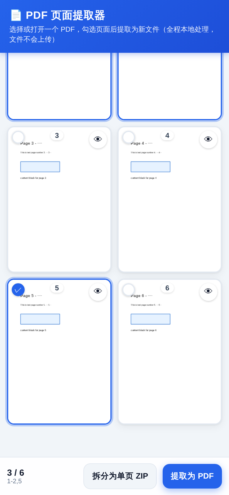

📄 PDF 页面提取器 · 使用教程
免安装 · 纯前端 · 离线可用 —— 文件全程不离开你的设备
这是什么？
一个在浏览器里运行的 PDF 工具：选页 → 提取 / 拆分 / 合并，全部在本机完成，不上传任何服务器。
1. 获取工具
2. 打开方式
| 设备 | 做法 |
|---|
| Windows / Mac | 双击 PDF页面提取器-单文件版.html，用浏览器打开即可 |
| Android | 用文件管理器找到该文件 → “用 Chrome / 浏览器打开” |
| iPhone | Safari 不能直接开本地 HTML，请让电脑跑 python3 serve.py，手机连同一 Wi-Fi 访问打印出的地址 |
3. 提取页面（最常用）
1
点击“📂 点击选择 PDF 文件”选文件（或拖入 / 粘贴链接）。
2
等待缩略图出现，点页面卡片勾选要提取的页；也可用“快速添加”输入范围 2-5、1-3,5,8-10。
3
点底部“提取为 PDF”，浏览器自动下载新文件（如 原文件名_第2-5页.pdf）。
4. 其它功能
拆分为单页 ZIP：每页单独存一个 PDF，打包下载。
合并 PDF：切到“合并 PDF”标签，添加多个文件并拖动排序后合并。
旋转 / 倒序：对选中页追加 90° 旋转，或按倒序输出。
加密 PDF：打开时输入密码；因浏览器限制，加密页会转为图片输出（清晰度可选）。
全屏预览：点眼睛图标，可缩放 / 旋转 / 左右滑动翻页。
5. 界面预览

6. 常见问题
Q：加密 PDF 提取后文字不能选中？
A：加密文件会被转为图片再输出，这是浏览器技术限制，清晰度可在“高级设置”调（普通 2x / 高清 3x）。
Q：粘贴网址打不开？
A：多数网站禁止跨域，属正常，请先下载到本地再打开。
Q：iOS 下载的文件在哪？
A：Safari 下载后在“文件”App 的“下载”里。